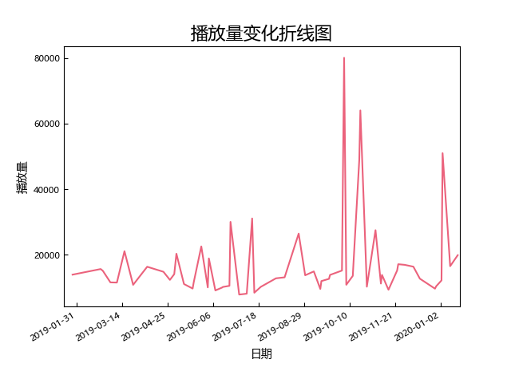

Z2.0(20190120-20201108)（第二次组阁至中泰重组）

场次：
59（普通场：33）
平均播放量：
17398（所有公演），13170（普通公演）
中位播放量：
13522（所有公演），12773（普通公演）
标准差：
13216（所有公演），2494（普通公演）
播放量前三：
- 19年杨可璐生诞(80092)
- 19年王秭歆生诞(64024)
- 19年杨媛媛生诞(50983)
播放量变化分析：
略有起伏但基本保持稳定
高播放量公演推荐：
- 19年杨可璐生诞：王的男人之修罗场，王偲越的信又惨又好笑，小王子的信充满了“正宫”的炫耀，Z队磕研所卓有成效
- 19年王秭歆生诞：“感情里没有先来后到，而且我是先来的那个！”方琪的“第一次”也很好笑
- 19年杨媛媛生诞：全塞纳河我最喜欢的生日pv，又搞笑又甜，镜头质量满分。直女爱情ttl
- 19年龙亦瑞生诞：Z队的Z是zqsg的Z。拥抱好苏
- 19年方琪生诞：用舞台剧串起来的生诞表演环节，全程节奏流畅紧凑，非常优秀
- 19年王炯义生诞：王的男人系列